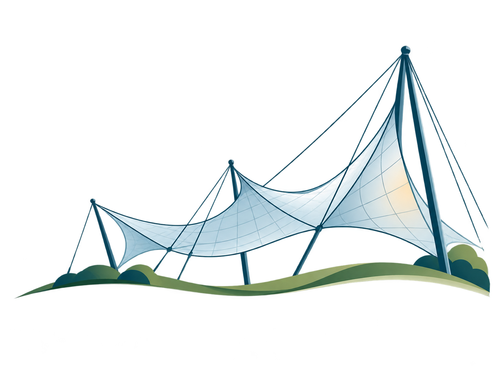

HUMAN JUDGMENT FIRST
따라 만드는 것보다, 왜 선택했는지를 설명하는 일이 더 중요합니다.
01 · 먼저 판단하기AI에게 묻기 전 공간의 문제와 우선순위를 직접 정의합니다.
02 · 근거와 비교하기AI 결과를 현장 사진·공식 데이터·전공 기준과 대조합니다.
03 · 책임 있게 결정하기채택·수정·거부 중 하나를 고르고 그 이유를 기록합니다.
나의 첫 판단→AI 실험→근거 대조→오류 찾기→최종 결정

EXAMPLE · START HERE
예제에서 원리를 읽고, 내 조건에 맞게 다시 판단한다
YOUR TURN
나의 실습 이미지
＋ 기준 이미지 선택
JPG / PNG / WebP 미리보기
JPG / PNG / WebP 미리보기
HUMAN CHECK · REQUIRED
AI의 제안보다 나의 판단과 근거가 최종 결과입니다.
“좋다/나쁘다”로 끝내지 마세요. 무엇을 확인했고, AI의 제안을 왜 채택·수정·거부했는지 구체적으로 기록합니다.
완료 조건: 4개 확인 항목 + 최종 결정 + 구체적인 판단 근거